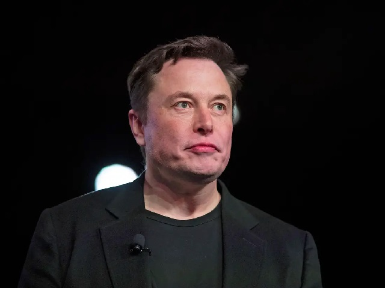

Elon Musk

Elon Musk is a South African-born American entrepreneur and businessman who founded X.com in 1999 (which later became PayPal), SpaceX in 2002 and Tesla Motors in 2003. Musk became a multimillionaire in his late 20s when he sold his start-up company, Zip2, to a division of Compaq Computers.
companie owned by elon musk
Zip2 In 1995, Musk, Kimbal, and Greg Kouri founded web software company Zip2 with funds from angel investors.They housed the venture at a small rented office in Palo Alto.The company developed and marketed an Internet city guide for the newspaper publishing industry, with maps, directions, and yellow pages.PayPal In 1999, Musk co-founded X.com, an online financial services and e-mail payment company.The startup was one of the first federally insured online banks, and, in its initial months of operation, over 200,000 customers joined the service.The company's investors regarded Musk as inexperienced and had him replaced with Intuit CEO Bill Harris by the end of the year.The following year, X.com merged with online bank Confinity to avoid competition.Founded by Max Levchin and Peter Thiel,Confinity had its own money-transfer service, PayPal, which was more popular than X.com's serviceSpaceX n 2001, Musk became involved with the nonprofit Mars Society. He was inspired by plans to place a growth-chamber for plants on Mars and discussed funding the project himself.In October 2001, Musk traveled to Moscow with Jim Cantrell and Mike Griffin to buy refurbished Intercontinental ballistic missiles (ICBMs) that could send the greenhouse payloads into space. He met with companies NPO Lavochkin and Kosmotras; however, Musk was seen as a novice and was even spat on by one of the Russian chief designers. The group returned to the United States empty-handed. In February 2002, the group returned to Russia to look for three ICBMs. They had another meeting with Kosmotras and were offered one rocket for $8 million, which Musk rejected. Musk instead decided to start a company that could build affordable rockets.With $100 million of his early fortune,Musk founded Space Exploration Technologies Corp., traded as SpaceX, in May 2002.As of 2021, he remains the company's CEO and also holds the title of Chief Engineer.Tesla Tesla,Inc.—originally Tesla Motors—was incorporated in July 2003 by Martin Eberhard and Marc Tarpenning, who financed the company until the Series A round of funding.Both men played active roles in the company's early development prior to Musk's involvement.Musk led the Series A round of investment in February 2004; he invested $6.5 million, became the majority shareholder, and joined Tesla's board of directors as chairman.Musk took an active role within the company and oversaw Roadster product design but was not deeply involved in day-to-day business operations.Following a series of escalating conflicts in 2007 and the 2008 financial crisis, Eberhard was ousted from the firm.Musk assumed leadership of the company as CEO and product architect in 2008.A 2009 lawsuit settlement with Eberhard designated Musk as a Tesla co-founder, along with Tarpenning and two others.As of 2019, Elon Musk was the longest tenured CEO of any automotive manufacturer globally.In 2021, Musk nominally changed his title to Technoking while retaining his position as CEO.Neuralink In 2016, Musk co-founded Neuralink, a neurotechnology startup company to integrate the human brain with artificial intelligence (AI) by creating devices that are embedded in the human brain to facilitate its merging with machines. The devices will also reconcile with the latest improvements in artificial intelligence to stay updated. Such improvements could enhance memory or allow the devices to communicate with software more effectively.The boring company In 2016, Musk founded The Boring Company to construct tunnels.In early 2017, the company began discussions with regulatory bodies and initiated construction of a 30-foot (9.1 m) wide, 50-foot (15 m) long, and 15-foot (4.6 m) deep "test trench" on the premises of SpaceX's offices as it required no permits.A tunnel beneath the Las Vegas Convention Center was completed in early 2021.Local officials have approved further expansions of the tunnel system.OpenAI In December 2015, Musk announced the creation of OpenAI, a not-for-profit artificial intelligence (AI) research company aiming to develop artificial general intelligence intended to be safe and beneficial to humanity.A particular focus of the company is to "counteract large corporations [and governments] who may gain too much power by owning super-intelligence systems".In 2018, Musk left the OpenAI board to avoid possible future conflicts with his role as CEO of Tesla as the company increasingly became involved in AI through Tesla AutopilotTwitter
Musk is an active user of the social media platform Twitter, where he has over 91 million followers.Musk made the first tweet on his personal account in June 2010. He posts memes, promotes his business interests, and sometimes comments on contemporary political and cultural issues.
Musk has faced some controversy as a result of his use of the platform. In August 2018, he claimed in a tweet that he was taking Tesla private at $420 per share, a joking reference to marijuana. An SEC investigation concluded that the tweets had no basis in fact and hurt investors, resulting in separate fines to Musk and Tesla of $20 million each. The settlement also included a clause that Musk would have legal counsel approve tweets about Tesla in advance. In 2022 he was also sued by Tesla shareholders over the tweet. Musk maintains that the joke was "worth it".